在中，已经初步介绍了矢量控制的基本过程。
此篇文章将具体介绍，如何输出电压矢量$\boldsymbol{u_s}$到电机。
电压矢量输出说明
还是以 $i_d = 0$的控制方法为例，如图1-1所示，现在我们要输出电压$\boldsymbol{u_s}$，使得电流$\boldsymbol{i_s}$与$\boldsymbol{\psi_f}$的夹角$\beta=90^\circ$，以便电机以最大转矩运转。在此，我们估且将要输出的电压$\boldsymbol{u_s}$称为目标电压或者期望电压。
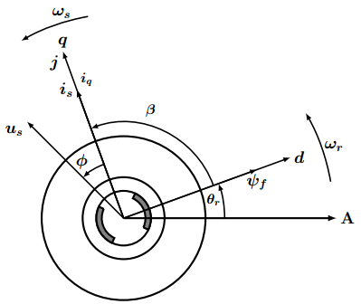
同时，将SVPWM算法加入到控制流程后，其大致过程如图1-2所示。
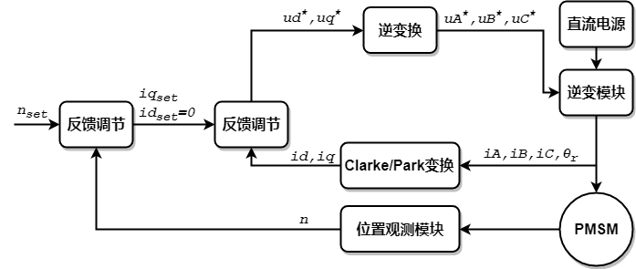
看到这张图，有人会笑了，这SVPWM算法不是Park和Clarke的逆变换嘛。但我们说，事实并不是这样，由$u_d ^*, u_q ^* $经过逆变换得到的$u_A, u_B, u_C$是正弦值，即要输出正弦波电压，这样就是SPWM算法了，而不是SVPWM。
SPWM与SVPWM
拿同步电机来说，在定子三相绕组通入三相对称正弦电流时，则会在气隙中产生正弦分布且幅值恒定的圆形旋转磁场，即定子的磁链矢量轨迹是圆形，定子绕组中的电压矢量轨迹也是圆形的，这对于电机控制来说，可以说是最理想的情况了。
上面已经说过，由$u_d ^*, u_q ^* $经过逆变换得到的$u_A, u_B, u_C$是正弦波信号，所以，SPWM与SVPWM算法都是为了使输出的电压，尽量的接尽三相对称正弦波，以便得到理想的圆形磁链。
SPWM的做法是对输出的PWM进行调制，使用PWM脉冲宽度按正弦规很变化，从而达到正弦波信号的效果（具体的原理就不细说了）。
SVPWM的做法就请接着往下看了。
逆变输出矢量表
要输出目标电压，我们得先知道逆变电路是怎样输出电压信号的。三相逆变电路原理图如图2-1所示。
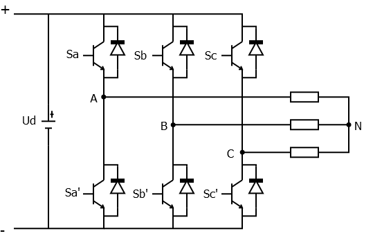
我们在这做如下约定：
| 1 | 0 | |
|---|---|---|
| $s_a$ | A相上桥导通 | A相下桥导通 |
| $s_b$ | B相上桥导通 | B相下桥导通 |
| $s_c$ | C相上桥导通 | C相下桥导通 |
即逆变电路可以输出8个基本状态的电压矢量。以 $s_a s_b s_c = 100$ 为例，来计算输出的电压矢量 $\boldsymbol{u_4} = \boldsymbol{u_{100}}$。相电压有如下关系式：
$$
\begin{cases}
U_A = U_{AN} \\
U_B = U_{BN} \\
U_C = U_{CN} \\
\end{cases}
\tag{2-1}\label{2-1}
$$
由导通桥可得：
$$
\begin{cases}
U_d &= U_{AN} - U_{BN} \\
U_d &= U_{AN} - U_{CN} \\
\end{cases}
\tag{2-2}\label{2-2}
$$
可解得：
$$
\begin{cases}
U_A = \cfrac{2U_d}{3} \\
U_B = -\cfrac{U_d}{3} \\
U_C = -\cfrac{U_d}{3} \\
\end{cases}
\tag{2-3}\label{2-3}
$$
同时，根据空间矢量定义和Clarke变换：
$$
\boldsymbol{u_s} = U_\alpha + j U_\beta \\
\begin{bmatrix}
U_\alpha \\
U_\beta \\
\end{bmatrix}
=
{2 \over 3}
\begin{bmatrix}
1 &-{\frac 1 2} &-{\frac 1 2} \\
0 &{\frac {\sqrt{3}} 2} &-{\frac {\sqrt{3}} 2} \\
\end{bmatrix}
\begin{bmatrix}
U_A \\
U_B \\
U_C \\
\end{bmatrix}
$$
可以解得输电电压矢量为：
$$
\boldsymbol{u_4} = \boldsymbol{u_{100}} = \cfrac{2}{3}U_d\,e^{j0}
$$
同理，可解得所有的8个基本电压矢量如下表所示：
$$
\begin{array}{l | c c c | c}
\hline
\text{电压矢量} &\qquad U_A \qquad&\qquad U_B \qquad&\qquad U_C \qquad& \text{表达式} \\
\hline
\boldsymbol{u_0} = \boldsymbol{u_{000}} & 0 & 0 & 0 & 0 \\
\hline
\boldsymbol{u_1} = \boldsymbol{u_{001}} & -\cfrac{1}{3}U_d & -\cfrac{1}{3}U_d & \cfrac{2}{3}U_d & \cfrac{2}{3}U_d \, e^{j\frac{4}{3}\pi} \\
\hline
\boldsymbol{u_2} = \boldsymbol{u_{010}} & -\cfrac{1}{3}U_d & \cfrac{2}{3}U_d & -\cfrac{1}{3}U_d & \cfrac{2}{3}U_d \, e^{j\frac{2}{3}\pi} \\
\hline
\boldsymbol{u_3} = \boldsymbol{u_{011}} & -\cfrac{2}{3}U_d & \cfrac{1}{3}U_d & \cfrac{1}{3}U_d & \cfrac{2}{3}U_d \, e^{j\pi} \\
\hline
\boldsymbol{u_4} = \boldsymbol{u_{100}} & \cfrac{2}{3}U_d & -\cfrac{1}{3}U_d & -\cfrac{1}{3}U_d & \cfrac{2}{3}U_d \, e^{j0} \\
\hline
\boldsymbol{u_5} = \boldsymbol{u_{101}} & \cfrac{1}{3}U_d & -\cfrac{2}{3}U_d & \cfrac{1}{3}U_d & \cfrac{2}{3}U_d \, e^{j\frac{5}{3}\pi} \\
\hline
\boldsymbol{u_6} = \boldsymbol{u_{110}} & \cfrac{1}{3}U_d & \cfrac{1}{3}U_d & -\cfrac{2}{3}U_d & \cfrac{2}{3}U_d \, e^{j\frac{1}{3}\pi} \\
\hline
\boldsymbol{u_7} = \boldsymbol{u_{111}} & 0 & 0 & 0 & 0 \\
\hline
\end{array}
\\
\text{表2-1 基本电压矢量}
$$
从表中可以看到，逆变电路能输出的电压矢量的最大值为：
$$
U_{max} = \cfrac{2}{3}U_d
\tag{2-4}\label{2-4}
$$
基本电压矢量在空间复平面的分布如图2-2所示：
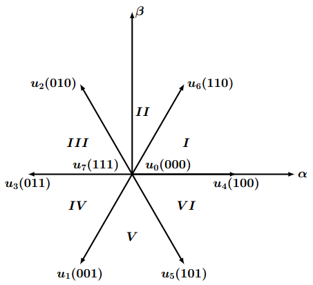
看到这张图，又有人会笑了，这最多输出一个正六边形轨迹的电压矢量，离圆形轨迹还差着呢；但是我们说，SVPWM算法的作用，就是用这8个基本电压矢量，来合成输出任一个目标电压矢量。
空间电压矢量的合成
一个电周期内如果只输出6个基本电压矢量，则会形成正六边形轨迹，跟圆形轨迹相差很远，那我们像割圆术那个，增加输出的电压矢量个数，形成正$N$多边形，尽可能的逼尽圆形轨迹。但是$N$能不能无限变大呢？我们先来分析一个$N$与什么有关。
控制周期
设每个输出的电压矢量作用时间，即控制周期为$T_s$，电角速度为$\omega$，则$N$即为一个电周期内的控制次数，为：
$$
N = \cfrac{2\pi / \omega}{T_s}
\tag{3-1}\label{3-1}
$$
理论上说，电机转速越小，控制周期$T_s$越小，则一个电周期内的控制次数越多。
但从实际的角度来讲，电机转速需要根据需求来定，如果做高速电机，那就不可能通过降低转速来增加控制次数。所以，只有通过减小控制周期，提高控制频率，来增加控制次数，使用电压矢量轨迹尽可能逼尽圆形。
控制周期$T_s$主要跟以下一些因素有关：
- 电机控制算法时间消耗；
- 单片机运算速度；
- 逆变电路中功率器件（IGBT、MOSFET等）支持的切换频率；
合成原理
现在，我们假设控制周期为$T_s$，即任一个目标电压$\boldsymbol{u_s}$，持续输出的时间均为$T_s$。以第$I$扇区内的目标电压$\boldsymbol{u_s}$为例，合成的原理图如图3-1所示：
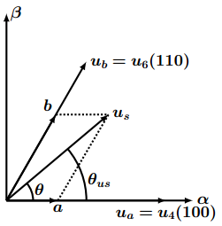
$\theta$ 为 $\boldsymbol{u_s}$ 与第$I$扇区邻边 $\boldsymbol{u_4}$的夹角；
$\theta_{us}$ 为 $\boldsymbol{u_s}$ 与 $\alpha$ 轴的夹角；
根据平衡等效原则，得到以下式子：
$$
\begin{split}
\boldsymbol{u_s} \, T_s &= \boldsymbol{u_a} \, T_a + \boldsymbol{u_b} \, T_b \\
&= \boldsymbol{u_4} \, T_a + \boldsymbol{u_6} \, T_b \\
\end{split}
\tag{3-2}\label{3-2}
$$
上式的意义为：基本电压矢量 $\boldsymbol{u_4}$ 和 $\boldsymbol{u_6}$ 分别作用时间 $T_a, \, T_b$产生的效果，与目标电压$\boldsymbol{u_s}$作用时间 $T_s$的效果相同。即用第$I$扇区的相邻电压矢量$\boldsymbol{u_4}, \, \boldsymbol{u_6}$ 合成了目标电压矢量$\boldsymbol{u_s}$。
需要注意的是，合成$\boldsymbol{u_s}$ 所用的实际时间，即$T_a, \, T_b$ 之和需要满足：
$$
T_a + T_b \le T_s
\tag{3-3}\label{3-3}
$$
看到这，我们会问，如果 $T_a + T_b$ 小于 $T_s$ ，是不是可以减小控制周期呢？然而，事实并非如此，原因便是电压矢量的合成时间 $T_a + T_b$ 并不是恒定的，如果使用变化的控制周期，则相当于$\boldsymbol{u_s}$ 转过相同的角度，所用的时间是变化的，这样就是说转速一直是变化的，没法稳态。对于多出的时间，我们可以输出电压零矢量（$\boldsymbol{u_0}, \, \boldsymbol{u_7}$），这样，既不会影响合成效果，也能保证控制周期的恒定。
所以，式$\eqref{3-2}$ 可以写成（加上零矢量后，矢量大小和方向不变）：
$$
\begin{split}
\boldsymbol{u_s} \, T_s &= \boldsymbol{u_a} \, T_a + \boldsymbol{u_b} \, T_b + (\boldsymbol{u_0} \; \text{or} \; \boldsymbol{u_7}) \, T_0\\
&= \boldsymbol{u_4} \, T_a + \boldsymbol{u_6} \, T_b + (\boldsymbol{u_0} \; \text{or} \; \boldsymbol{u_7}) \, T_0\\
\end{split}
\tag{3-4}\label{3-4}
$$
式中，$T_a + T_b + T_0 = T_s$，$T_0$ 为电压零矢量作用时间。将式$\eqref{3-4}$ 变形为：
$$
\begin{split}
\boldsymbol{u_s} &= \boldsymbol{u_a} \, \cfrac{T_a}{T_s} + \boldsymbol{u_b} \, \cfrac{T_b}{T_s} \\
&= \boldsymbol{a} + \boldsymbol{b}
\end{split}
\tag{3-5}\label{3-5}
$$
式 $\eqref{3-5}$ 变成了我们熟悉的平行四边形矢量合成了（见图3-1）。
合成时间
最后，我们需要求出时间 $T_a, \, T_b$ 的值，根据图3-1和三角正弦定理有：
$$
\cfrac{|\boldsymbol{u_s}|}{sin\frac{2}{3}\pi}
= \cfrac{|\boldsymbol{a}|}{sin(\frac{\pi}{3} - \theta)}
= \cfrac{|\boldsymbol{b}|}{sin\theta}
\tag{3-6}\label{3-6}
$$
矢量大小为：
$$
|\boldsymbol{u_a}| = |\boldsymbol{u_b}| = \cfrac{2}{3}U_d \\
|\boldsymbol{u_s}| = U_s
$$
可以解得：
$$
\begin{cases}
T_a = \cfrac{\sqrt{3} \, U_s \, T_s}{U_d} \, sin\left (\cfrac{\pi}{3} - \theta\right) \\[2ex]
T_b = \cfrac{\sqrt{3} \, U_s \, T_s}{U_d} \, sin(\theta) \\[2ex]
T_0 = T_s - T_a - T_b \\
\end{cases}
\tag{3-7}\label{3-7}
$$
再结合$\theta$的关系式：
$$
\begin{cases}
\theta_{us} = \theta + (m-1) \cdot \cfrac{\pi}{3}\\
U_\alpha = U_s \, cos(\theta_{us}) \\
U_\beta = U_s \, sin(\theta_{us}) \\
\end{cases}
\tag{3-8}\label{3-8}
$$
式中，$m$为扇区号(1~6)。由式$\eqref{3-7}和式$\eqref{3-8}可以解得：
$$
\begin{cases}
T_a = \cfrac{\sqrt{3} \, T_s}{U_d} \, \left(U_\alpha \, sin {m\pi \over 3} - U_\beta \, cos {m\pi \over 3} \right) \\[2ex]
T_b = \cfrac{\sqrt{3} \, T_s}{U_d} \, \left(-U_\alpha\, sin {(m-1)\pi \over 3} + U_\beta \, cos {(m-1)\pi \over 3} \right) \\
\end{cases}
\tag{3-9}\label{3-9}
$$
由式$\eqref{3-9}$，可以解得各扇区内电压矢量$\boldsymbol{u_a}, \, \boldsymbol{u_b}$的作用时间，如下表所示：
$$
\begin{array}{l | c c | c | c }
\hline
\text{扇区} &\qquad \boldsymbol{u_a} \quad&\quad \boldsymbol{u_b} \qquad&\qquad T_a \qquad\quad&\quad\qquad T_b \\
\hline
I & \boldsymbol{u_4}(100) & \boldsymbol{u_6}(110) & \cfrac{\sqrt{3}T_s}{2U_d}(\sqrt{3}U_\alpha - U_\beta) & \cfrac{\sqrt{3}T_s}{U_d}U_\beta \\
\hline
II & \boldsymbol{u_6}(110) & \boldsymbol{u_2}(010) & \cfrac{\sqrt{3}T_s}{2U_d}(\sqrt{3}U_\alpha + U_\beta) & \cfrac{\sqrt{3}T_s}{2U_d}(-\sqrt{3}U_\alpha + U_\beta) \\
\hline
III & \boldsymbol{u_2}(010) & \boldsymbol{u_3}(011) & \cfrac{\sqrt{3}T_s}{U_d}U_\beta & \cfrac{\sqrt{3}T_s}{2U_d}(-\sqrt{3}U_\alpha - U_\beta) \\
\hline
IV & \boldsymbol{u_3}(011) & \boldsymbol{u_1}(001) & \cfrac{\sqrt{3}T_s}{2U_d}(-\sqrt{3}U_\alpha + U_\beta) & -\cfrac{\sqrt{3}T_s}{U_d}U_\beta \\
\hline
V & \boldsymbol{u_1}(001) & \boldsymbol{u_5}(101) & \cfrac{\sqrt{3}T_s}{2U_d}(-\sqrt{3}U_\alpha - U_\beta) & \cfrac{\sqrt{3}T_s}{2U_d}(\sqrt{3}U_\alpha - U_\beta) \\
\hline
VI & \boldsymbol{u_5}(101) & \boldsymbol{u_4}(100) & -\cfrac{\sqrt{3}T_s}{U_d}U_\beta & \cfrac{\sqrt{3}T_s}{2U_d}(\sqrt{3}U_\alpha + U_\beta) \\
\hline
\end{array}
\\
\text{表3-1 电压矢量作用时间}
$$
现在再来看下时间的约束条件：
$$
T_a + T_b \le T_s \\
\cfrac{\sqrt{3} \, U_s \, T_s}{U_d} \, sin\left (\cfrac{\pi}{3} - \theta\right) +
\cfrac{\sqrt{3} \, U_s \, T_s}{U_d} \, sin(\theta)
\le T_s
$$
可以化简得到：
$$
\cfrac{\sqrt{3} \, U_s}{U_d} \, cos\left(\theta - \cfrac{\pi}{6} \right) \le 1
, \quad \theta \in [0, \cfrac{\pi}{3}]
\tag{3-10}\label{3-10}
$$
继续变形得：
$$
U_s \le \cfrac{U_d}{\sqrt{3}cos\left(\theta - \cfrac{\pi}{6} \right)}
, \quad \theta \in [0, \cfrac{\pi}{3}]
\tag{3-11}\label{3-11}
$$
根据式$\eqref{3-11}$，在输出圆形轨迹电压矢量的前提下，$U_s$的最大值为：
$$
U_{smax} = \cfrac{U_d}{\sqrt{3}}
\tag{3-12}\label{3-12}
$$
动画演示
最后用一个动态动来演示一下，输出合成的电压矢量的效果，如图3-2所示：
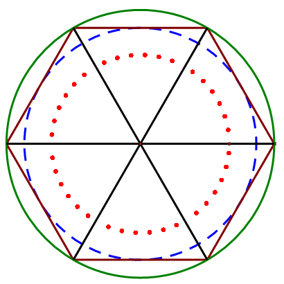
绿色实线圆 代表逆变电路能够输出的电压矢量的最大值（式$\eqref{2-4}$）；
蓝色虚线圆 代表逆变电路能够输出的圆形轨迹电压矢量的最大值（式$\eqref{3-12}$）；
红色点线圆 代表逆变电路当前输出的电压矢量的圆形轨迹；
棕色正六边形 代表8个基本电压矢量输出的轨迹；
时间分配
电压矢量时间分配，其实是说零矢量的分配。通过前面已经知道，零矢量有$\boldsymbol{u_0} (000)$ 和 $\boldsymbol{u_7} (111)$ 两个，七段式SVPWM使用2个零矢量，而五段式SVPWM只使用1个零矢量。
这里简单说下七段式SVPWM的矢量时间的分配。首先，为了使$T_a, T_b$ 变化连续，将第2、4、6扇区的 $\boldsymbol{u_a}, \boldsymbol{u_b}$对调，得到的七段式电压矢量时间分配如下表所示：
$$
\begin{cases}
X &= \cfrac{\sqrt{3}T_s}{2U_d}(\sqrt{3}U_\alpha + U_\beta) \\
Y &= \cfrac{\sqrt{3}T_s}{2U_d}(\sqrt{3}U_\alpha - U_\beta) \\
Z &= \cfrac{\sqrt{3}T_s}{2U_d}(2U_\beta) \\
\end{cases}
$$
$$
\begin{array}{l | c c | c | c }
\hline
\text{扇区} & \boldsymbol{u_a} & \boldsymbol{u_b} & T_a & T_b \\
\hline
I & \boldsymbol{u_4}(100) & \boldsymbol{u_6}(110) & Y & Z \\
\hline
II & \boldsymbol{u_2}(010) & \boldsymbol{u_6}(110) & -Y & X \\
\hline
III & \boldsymbol{u_2}(010) & \boldsymbol{u_3}(011) & Z & -X \\
\hline
IV & \boldsymbol{u_1}(001) & \boldsymbol{u_3}(011) & -Z & -Y \\
\hline
V & \boldsymbol{u_1}(001) & \boldsymbol{u_5}(101) & -X & Y \\
\hline
VI & \boldsymbol{u_4}(100) & \boldsymbol{u_5}(101) & X & -Z \\
\hline
\end{array}
\\
\text{表3-2 七段式电压矢量时间分配}
$$
一个控制周期内具体的时间分配，如图3-3所示，为第$I$扇区内的矢量时间分配。在相应的跳变沿时刻($t_a, t_b, t_c, t_c’, t_b’, t_a’$)，切换逆变电路对应的功率开关，即可实现输出电压矢量的切换。
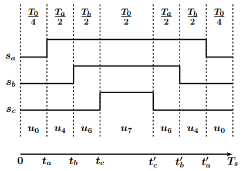
切换时刻计算公式如下：
$$
\begin{cases}
t_a &= \cfrac{T_s - T_a - T_b}{4} \\
t_b &= t_a + \cfrac{T_a}{2} = \cfrac{T_s + T_a - T_b}{4} \\
t_c &= t_b + \cfrac{T_b}{2} = \cfrac{T_s + T_a + T_b}{4} \\
\end{cases}
$$
而$t_a’, t_b’, t_c’$由对称关系可以即可求取。
所有扇区的矢量时间分配如图3-4所示：
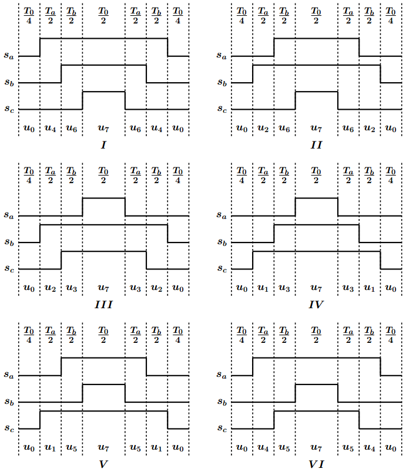
所有扇区的切换时刻如下表所示（$Tcm1,Tcm2,Tcm3$分别表示三相的切换时刻）：
$$
\begin{array}{l | c c c c c c }
\hline
\text{扇区} &I &II &III &IV &V &VI \\
\hline
Tcm1 &t_a &t_b &t_c &t_c &t_b &t_a \\
\hline
Tcm2 &t_b &t_a &t_a &t_b &t_c &t_c \\
\hline
Tcm3 &t_c &t_c &t_b &t_a &t_a &t_b \\
\hline
\end{array}
\\
\text{表3-3 七段式通切换时刻}
$$
矢量时间分配对应的电流仿真波形如图3-5所示：
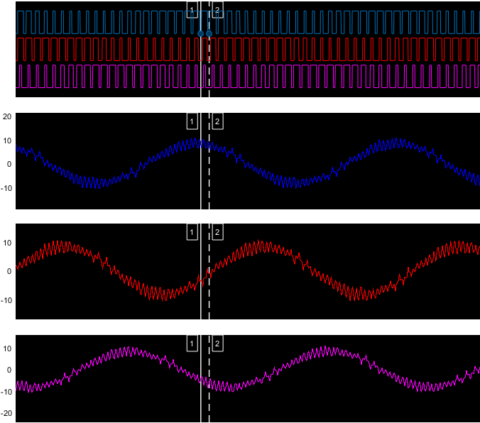
以第$I$扇区的时间分配为例，一个控制周期的具体波形，如图3-6所示：
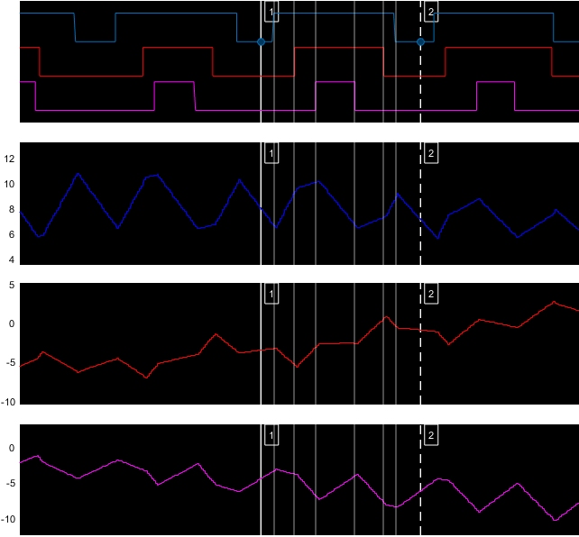
竖线1到竖线2之间，即为一个控制周期；蓝红紫分别对应$a,b,c$三相；
因为是七段式分配，故一个控制周期分成了7时间段。
每个时间段内：
- 如果是零矢量（$\boldsymbol{u_0}$ 或 $\boldsymbol{u_7}$），则三相均未导通，电流均向0减小。
- 如果是矢量$\boldsymbol{u_4}$至$\boldsymbol{u_6}$，则上桥导通的电流相，电流增大，下桥导通的电流相，电流减小。
结语
SVPWM原理的讲解到这就结束，具体如何在硬件(如：DSP、FPGA、IGBT、MOSFET等)上实现，这里就不再详细说了，毕竟不同的平台，方法不尽相同。纸上的东西终究是理论，看别人说如何如何，不如自己动手实践。
最附一个经典的SVPWM控制结构图，如图4-1所示：
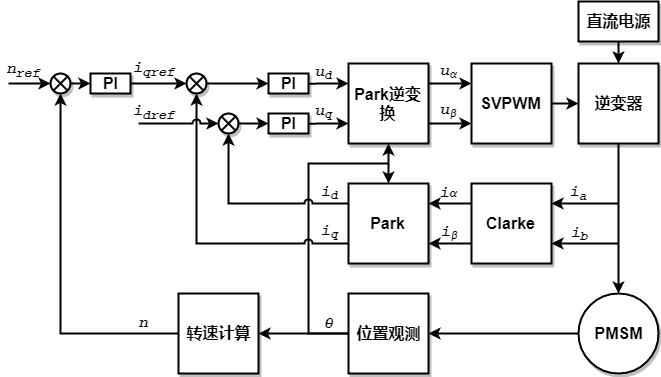
转载请注明来源，欢迎对文章中的引用来源进行考证，欢迎指出任何有错误或不够清晰的表达。可以在下面评论区评论，也可以邮件至 [ yehuohan@gmail.com ]